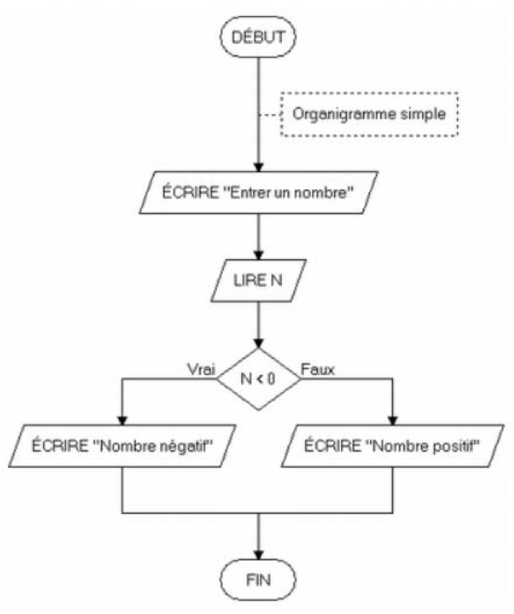
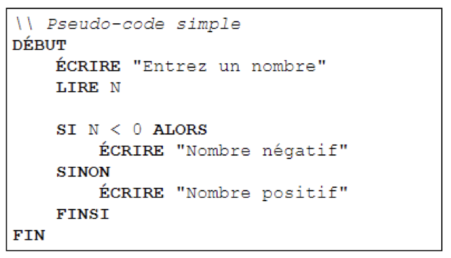
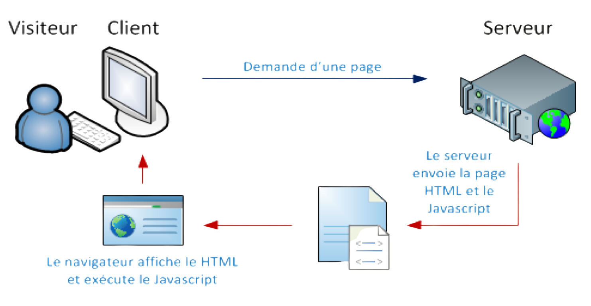
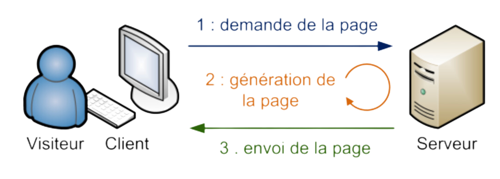

Le rôle de l’unité « programmation »
Obtenir d'une machine (ordinateur, calculatrice, robot,...) qu'elle fasse certaines taches à notre place.
Travail demandé dans le cadre de cet apprentissage
Lire et surtoutcomprendre le problème
Analyser le problème
En déduire un algorithme
Tester l’algorithme
Traduire cet algorithme dans un langage de programmation
Tester le programme
Notions d’analyse, d’algorithme
Mais qu’est-ce un algorithme
" Un algorithme peut être défini come étant une suite finie de règles à appliquer dans un ordre déterminé à un nombre fini de données pour arriver, en un nombre fini d'étapes, à un certain résultat, et cela indépendamment des données. "
OU
" Un algorithme peut aussi être défini comme étant une suite organisée d’opérations élémentaires effectuables par l’ordinateur pour résoudre un problème ou une classe de problèmes "
Représentations algorithmiques avec exemples
Représentation graphique : Ordinogramme
Représentation sous forme de texte : Langage de Description Algorithmique (LDA)
Langages JS et PHP, leurs différences avec schémas
Le JavaScript est un langage « CLIENT-SIDE » ->Exécuté par le navigateur chez l’internaute
Le PHP est un langage « SERVER-SIDE » -> Exécuté par le serveur WEB
